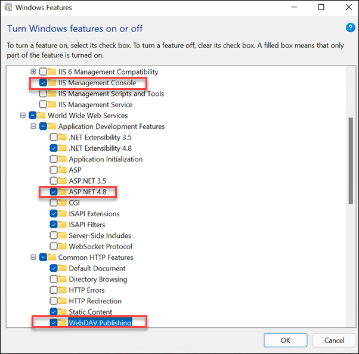
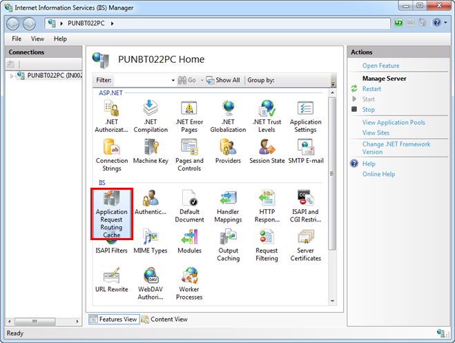

IIS Web Server
The IIS web server is a Windows component that is required to be able to configure websites, web services and web applications in SMC. IIS is typically enabled by default when you install Desigo CC.
On an existing Desigo CC installation, you can go through the steps below to verify if IIS installed, and enable it manually if necessary.
Enable IIS
Perform this check on the computer (Desigo CC server, or separate Client/FEP station) that hosts the IIS web server:
- To check the IIS web server and enable it if needed, refer to the help page Additional Installer Procedures, section Manually Install and Configure IIS on Different OS Types.
The screenshot below provides an example of enabling IIS web server on the Windows 11 operating system.

NOTE: If the IIS web server was enabled after installing Desigo CC, it may be necessary to re-run the Gms.InstallerSetup.exe installer to make the Websites node available in SMC.
Application Request Routing
If you manually installed IIS web server you may need to also manually install Application Request Routing (ARR) on the same computer.
- To verify the existing ARR installation and install it if necessary, refer to the help page Website Procedures, section Install Application Request Routing (ARR).
- When ARR is installed, the IIS Manager application in Windows will show the Application Request Routing Cache icon.
- Additionally, it is necessary to double-click this icon to enable proxy settings. For specific instructions, refer to the help page Website Procedures, section refer to Enable Proxy for the Application Request Routing (ARR) Cache in IIS.
